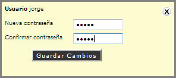

3.1. Cuentas de Usuarios
En esta opción el Administrador del Sistema podrá Crear Cuentas de Usuarios y asignarlos a los diferentes tipos de Grupos de Usuarios donde se podrá seleccionar los Privilegios correspondientes.
REQUISITO: Para crear un Nuevo Usuario deberá ser Usuario Administrativo.
<CREACIÓN DE UNA CUENTA DE USUARIO>
- Hacer "Clic" en la opción [Crear Nuevo Usuario].
- Aparecerá una pantalla donde se proporcionará el Registro del Nuevo usuario. (Datos Personales)
- Escribir el Usuario o Login, es el nombre con el cual el nuevo usuario se identificará para realizar algún tramite.
- Escribir Contraseña, es la palabra clave que el nuevo usuario usará para acceder a su Cuenta Personal.
- "Seleccionar" el Grupo al que pertenecerá el nuevo usuario.
- Administrtivo: Este grupo de usuarios, se le podrá asignar todo tipo de privilegios para el control del Sistema.
- Profesores: Este Grupo de usuarios, no contiene la asignación de todos los privilegios, el administrador le asignará privilegios y restricciones por grupo de usuarios.
- Alumnos de la Institución: Este Grupo de usuarios, no contiene la asignación de todos los privilegios, el administrador le asignará privilegios y restricciones por Grupo de usuarios.
- Escribir los siguientes Datos Personales. (Nombre, Género, Fecha de Nac., Direccion, Tel., Correo Electrónico)
- "Seleccionar" la Casilla Activo, esto indicará que el Nuevo Usuario tendrá su estado Activo.
- Si el Nuevo Usuario es Administrativo. Clic en la opción asignar privilegios ahora.
- Se mostrará un lista completa de los Privilegios que se le pueden asignar a un Usuario Administrador. Seleccionar las casillas.
- Hacer "Clic" en la opción [Guardar Cambios].
- Mostrará un Mensaje de Alerta que indicará que los Datos Fueron Guardados y se enviará una notificación por email.
<CONSULTA DE BITÁCORA DE USUARIOS>
- El sistema mostrará una Lista completa de los usuarios registrados.
- Hacer "Clic" en la opción [Bit].
- El sistema mostrará la Bitácora de Actividades.
- "Seleccionar" las Fechas de Consulta, Desde y Hasta.
- "Seleccionar" el Nombre del Usuario.
- "Seleccionar" la Actividad.
- Hacer "Clic" en la opción [Consultar].
- El sistema mostrará los resultados que fueron encontrados.
<CAMBIO DE CONTRASEÑA>
- Hacer "Clic" en la opción [Passwd].
- Aparece un cuadro de diálogo.

- Escribir la nueva contraseña.
- Escribir la Confirmación de la Contraseña.
- Hacer "Clic" en la opción [Guardar cambios] y opción [Aceptar].
- Se mostrará un Mensaje de Alerta de que el cambio de contraseña se ha Realizado y será notificado por email al usuario.